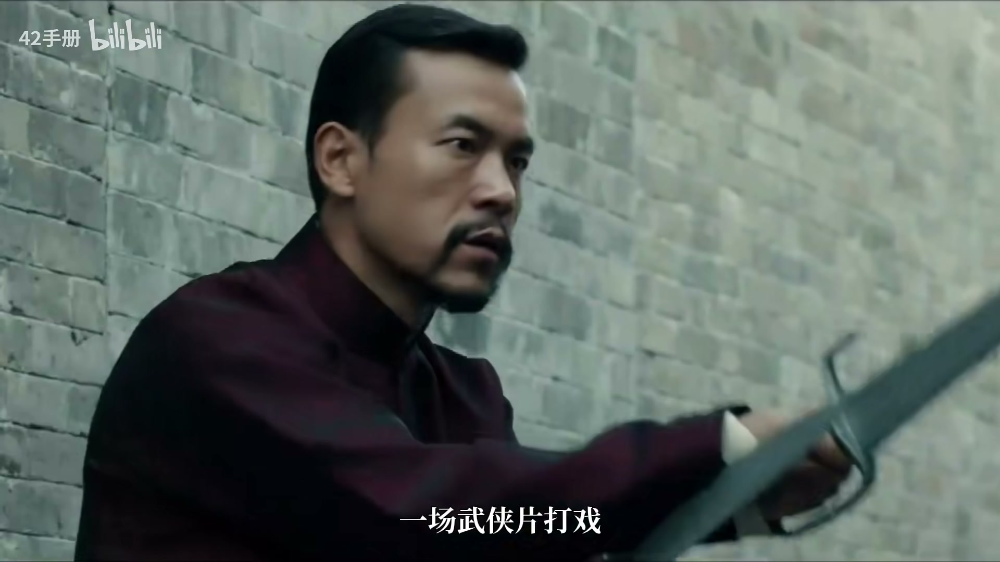
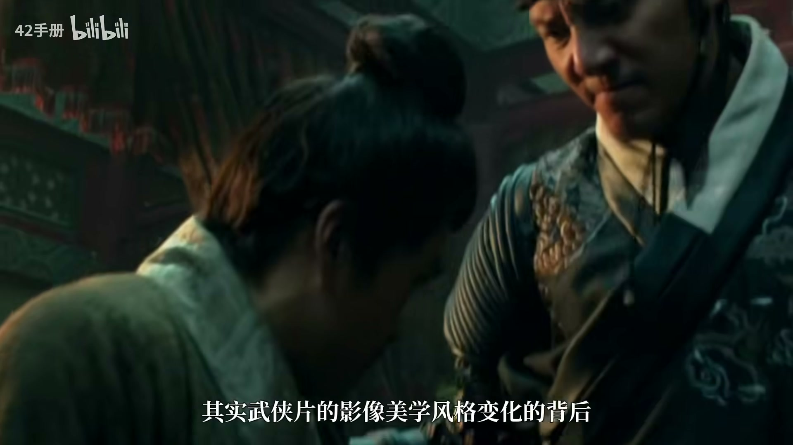
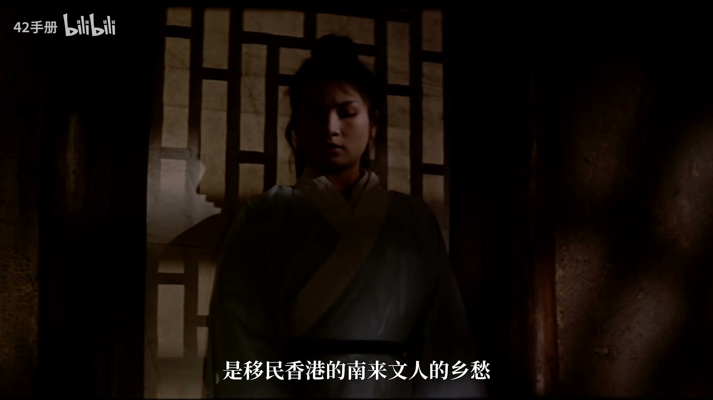
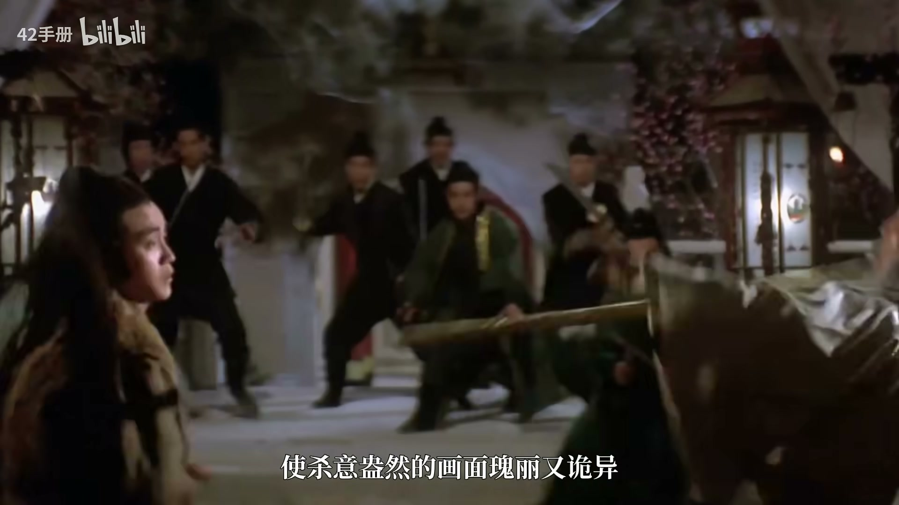
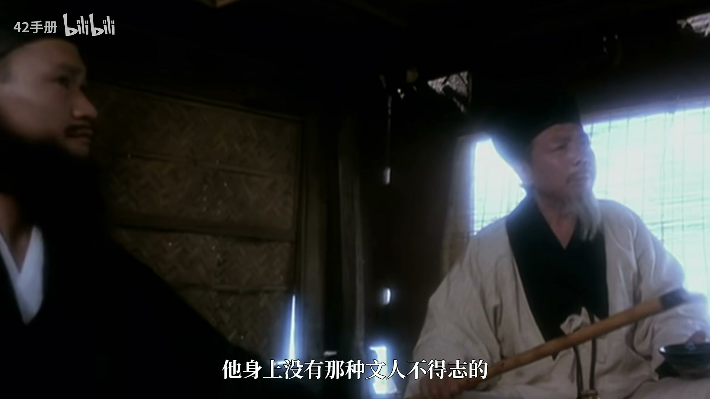
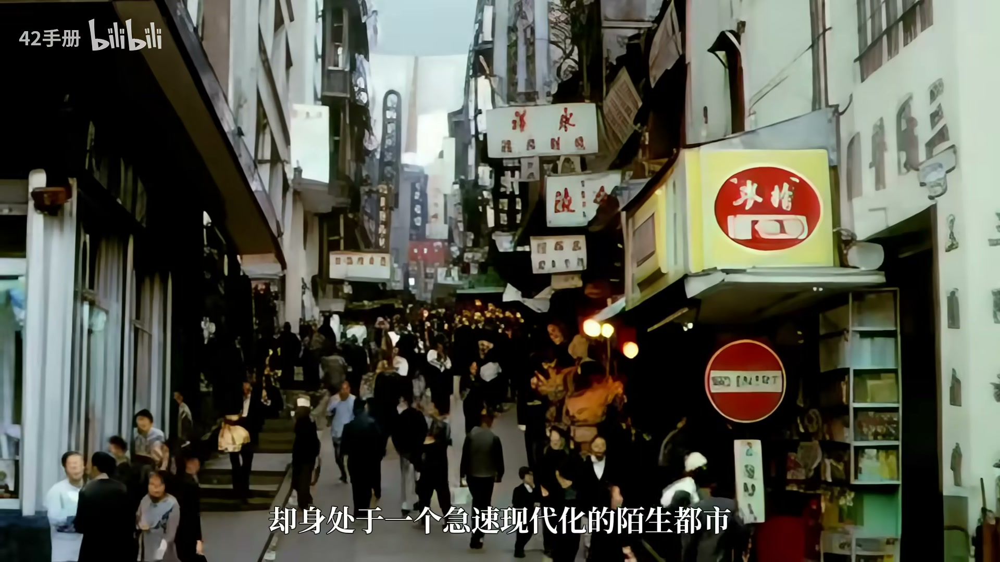
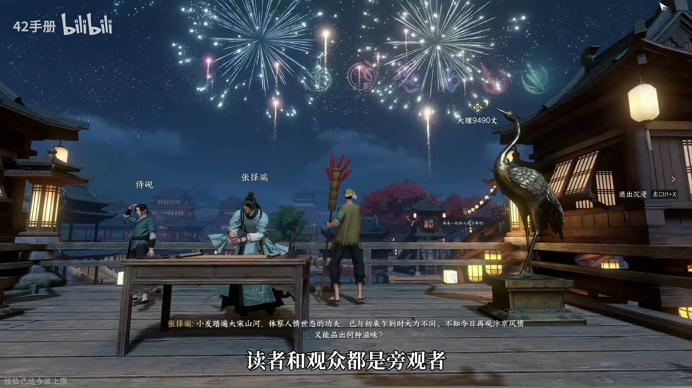
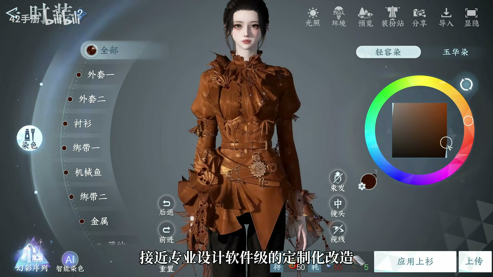
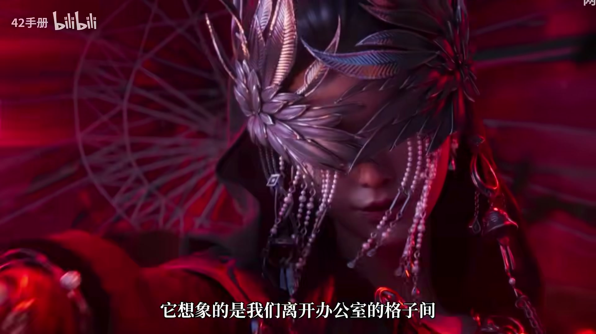

“古韵”消亡？60年间，武侠美学如何变迁……
开篇：武侠影像的古今对比
要点
- •上世纪武侠电影如画卷，人物游走于山水间，讲究远近深浅、留白虚实。
- •近年武侠片多用近景、固定机位、特写，强调打斗的写实与冲击力。
- •武侠片很久没有“意境”的概念了，身体习惯成为武侠的代名词。
结论
武侠片的影像美学风格变化背后是每一代人对武侠的不同理解。
关键引用
这是上世纪的武侠电影，像画卷一般让人物知字形游走于山水间。
好像我们的武侠片很久没有意运的概念了。

新派武侠双子星：胡金铨与张彻的阴阳之变
要点
- •胡金铨主张文人意趣，山水竹林、古寺溪流，营造空灵古画意境。
- •胡金铨的镜头美学讲究人在山水间，如画卷展开，追求“可居可游可行可望”。
- •张彻则走向阳刚血腥，男性英雄赤裸上身，血战、盘肠大战。
- •张彻的男性情义与惨烈死亡影响了吴宇森双雄模式和昆汀暴力美学。
结论
胡金铨与张彻分别代表阴柔与阳刚两种武侠美学，共同构成新派武侠片的起点。
关键引用
胡锦泉所主张的是一种文人意趣，山水竹林古寺溪流，烟云外构成空灵的古画意境。
而张彻则是另一个极端的杨刚处理，他镜头下的江湖尝试这样。

空间与身体：景别差异背后的美学主张
要点
- •胡金铨名场面多为远景、全景，室内多用中景，源自古画绘制习惯。
- •张彻将镜头呈现在半身，让人凝视男人的肌肉。
- •胡金铨的美学是传统文人式的怀古，是知识分子对世界动荡的禅意回应。
- •张彻的美学来自旧军阀家庭背景，关注微观结构、兄弟情谊和身体。
结论
胡金铨多用远景全景，张彻多用半身镜头，反映空间与身体的不同侧重。
关键引用
胡锦泉的名场面往往是原景全景，在室内也多用中景。
而张彻则是平平将镜头呈现在半身，平平让人凝望向男人的肌肉。

殊途同归：两种风格的相通与后续影响
要点
- •侠女中的树生时而露出狠丽面容，张彻镜头里也有意境幽缘的处理。
- •张彻之后有储源代表的奇贵伟美，使用浓艳色彩，契合古龙武侠的奇情。
- •随着电影行业发展，镜头语言日益完备，古意表达到达顶峰与终点。
结论
胡金铨与张彻虽风格迥异，但偶有相通，并共同影响了后来的武侠电影。
关键引用
侠女里的树生时而会露出狠丽面容，而张彻的镜头里也是有意境幽缘的处理。
够宽了新派武侠片的风格普戏。

现代气质：徐克、李安、张艺谋、王家卫的武侠新时代
要点
- •徐克的现代是美术技术上的求新求变，武侠作为幻想存在，迷恋技术特效。
- •李安提出新东方主义，东方亦可有自己的文化表达，而非西方中心幻想。
- •张艺谋让色彩本身成为故事，形式大于故事，仪式感压倒一切。
- •王家卫的现代气质最浓，武侠只是装扮风格，意在表达时间情绪。
结论
徐克、李安、张艺谋、王家卫虽风格不同，但都在武侠中表达了现代气质。
关键引用
徐克的现代是美术技术上的求星求变。
而李安的印象则是更鲜明地提出了一种主张，新东方主义。
形式要源大于故事，这位极善常摄影的大道让色彩本身就成为了故事。
因为他在表现的是一种时间情绪，是一种无法随时代流逝而流逝的概念。

市场收窄与近年武侠的写实转向
问题
- ?为什么观众不去看更贴近生活的武打动作片？
- ?为什么不去看比冷兵器更刺激的战争片？
- ?为什么不去看仙侠古偶？
要点
- •武侠市场空间收窄，阳光与阴柔各有困境。
- •近年武侠片血液消失，画面越压越黑，刀尖舔血。
- •绣春刀、师父等影片聚焦底层武人在灰色体制中的生存。
- •江湖即职场，侠客也是打工人，反映中产焦虑和职场困境。
结论
武侠电影市场收窄，近年转向写实风格，聚焦底层武人的生存挣扎。
关键引用
阳光的武侠电影需要解决的问题叫做为什么观众不去看更贴近生活的武打动作片。
血液消失了，大家几乎全都在拍血石的东西。
江湖其职场、侠客也是大功人。

时代印记：武侠影像背后的文化寻根与身份追问
要点
- •六七十年代港片武侠反映离散时代身份追问，是文化寻根与招魂。
- •新东方主义美学追问“我是谁”，现代东方会长成什么样子。
- •近年武侠聚焦底层生存，反映中产焦虑。
- •武侠影像风格的变迁是时代精神的投射。
结论
不同时代的武侠影像风格反映了不同的时代主题，从离散寻根到现代身份追问。
关键引用
六七十年代的港片武侠深层映照的是离散时代的身份追问。
二千几年前的东方主义美学则是追问我是谁。

游戏新可能：逆水寒中的活江湖
要点
- •游戏交互属性给武侠最贴切的解释：江湖是人构成的江湖。
- •玩家可以自由观看武侠世界，自己就是侠客。
- •可以与NPC对话、选择、甚至成为他们。
- •活江湖体现在互动和真实光影技术上。
结论
游戏《逆水寒》以交互性让玩家成为侠客，亲历江湖，是武侠的新可能。
关键引用
江湖是人构成的江湖，是每一位少侠所亲手经历的江湖。
在这个地方玩家自己就是侠客，你自己就可以闯荡江湖。
布料模拟与染色系统
问题
- ?时装系统如何实现高自由度定制？
步骤
- 采用HARVOC布料模拟技术
- 实时动态模拟布料
- 支持高自由度染色
- 调整材质反光质感
- 独立调整图案颜色和高光
要点
- •布料垂坠感、飘动感真实
- •染色系统接近专业设计软件
- •全色环自由选择
- •六元时装也有高品质
结论
布料模拟和染色系统让时装表现达到CG级别，且价格灵活。
关键引用
达到CG级别效果

武侠梦的现代诠释
问题
- ?武侠梦的本质是什么？
要点
- •武侠梦是美的体验
- •是千古文人侠客梦
- •是自由的想象力
- •想象离开办公室格子间
结论
武侠梦是自由的想象力，是对世俗的超越。
关键引用
武侠的好看本质上是一种自由的想象力
